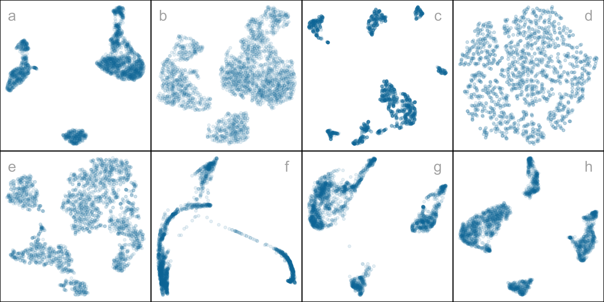
2 Choosing Better NLDR Layouts by Evaluating the Model in the High-Dimensional Data Space
Nonlinear dimension reduction (NLDR) techniques such as tSNE, and UMAP provide a low-dimensional representation of high-dimensional data (p\text{-}D) by applying a nonlinear transformation. NLDR often exaggerates random patterns. But NLDR views have an important role in data analysis because, if done well, they provide a concise visual (and conceptual) summary of p\text{-}D distributions. The NLDR methods and hyper-parameter choices can create wildly different representations, making it difficult to decide which is best, or whether any or all are accurate or misleading. To help assess the NLDR and decide on which, if any, is the most reasonable representation of the structure(s) present in the p\text{-}D data, we have developed an algorithm to show the 2\text{-}D NLDR model in the p\text{-}D space, viewed with a tour, a movie of linear projections. From this, one can see if the model fits everywhere, or better in some subspaces, or completely mismatches the data. Also, we can see how different methods may have similar summaries or quirks.
2.1 Introduction
Nonlinear dimension reduction (NLDR) is popular for making a convenient low-dimensional (k\text{-}D) representation of high-dimensional (p\text{-}D) data (k < p). Recently developed methods include t-distributed stochastic neighbor embedding (tSNE) (Maaten and Hinton 2008), uniform manifold approximation and projection (UMAP) (McInnes et al. 2018), potential of heat-diffusion for affinity-based trajectory embedding (PHATE) algorithm (Moon et al. 2019), large-scale dimensionality reduction using triplets (TriMAP) (Amid and Warmuth 2019), and pairwise controlled manifold approximation (PaCMAP) (Wang et al. 2021).
However, the representation generated can vary dramatically from method to method, choice of hyper-parameter or even random seed, as illustrated by Figure 2.1. The specific method and hyper-parameters used to produce each layout (see Supplementary Materials) is not essential for the discussion. The dilemma for the analyst is which representation to use. The choice might result in different procedures used in the downstream analysis, or different inferential conclusions. Various academics have expressed concerns with current practices and procedures for choosing (e.g. Irizarry (2024), Chari and Pachter (2023)). The research described here provides new numerical and visual tools to aid with this decision.
The chapter is organized as follows. Section 2.2 provides a summary of the literature on NLDR, and high-dimensional data visualization methods. Section 2.3 contains the details of the new methodology, including a simulated data example. In Section 2.4, we describe how to assess the best fit and identify the most accurate 2\text{-}D layout based on the proposed model diagnostics. Two applications illustrating the use of the new methodology for bioinformatics and image classification are in Section 2.5. Limitations and future directions are provided in Section 2.6.
2.2 Background
Historically, low-dimensional (k\text{-}D) representations of high-dimensional (p\text{-}D) data have been computed using multidimensional scaling (MDS) (Kruskal 1964), which includes principal components analysis (PCA) (for an overview see Jolliffe (2011)). (A contemporary comprehensive guide to MDS can be found in Borg and Groenen (2005).) The k\text{-}D representation can be considered to be a layout of points in k\text{-}D produced by an embedding procedure that maps the data from p\text{-}D. In MDS, the k\text{-}D layout is constructed by minimizing a stress function that differences distances between points in p\text{-}D with potential distances between points in k\text{-}D. Various formulations of the stress function result in non-metric scaling (Saeed et al. 2018) and isomap (Silva and Tenenbaum 2002). Challenges in working with high-dimensional data, including visualization, are outlined in Johnstone and Titterington (2009).
Many new methods for NLDR have emerged in recent years, all designed to better capture specific structures potentially existing in p\text{-}D. Here we focus on five currently popular techniques: tSNE, UMAP, PHATE, TriMAP and PaCMAP. The methods tSNE, UMAP, TriMAP and PaCMAP can be considered for producing the k\text{-}D representation by minimizing the divergence between two inter-point distance distributions. PHATE is an example of a diffusion process spreading to capture geometric shapes, that include both global and local structure. (See Coifman et al. (2005) for an explanation of diffusion processes.)
The array of layouts in Figure 2.1 illustrate what can emerge from the choices of method and hyper-parameters, and the random seed that initiates the computation. Key structures interpreted from these views suggest: (1) highly separated clusters (a, b, e, g, h) with the number ranging from 3-6; (2) stringy branches (f), and (3) barely separated clusters (c, d) which would contradict the other representations. These contradictions arise because these methods and hyper-parameter choices provide different lenses on the interpoint distances in the data.
The alternative approach to visualizing the high-dimensional data is to use linear projections. PCA is the classical approach, resulting in a set of new variables which are linear combinations of the original variables. Tours, defined by Asimov (1985), broaden the scope by providing movies of linear projections, that provide views the data from all directions. (See Lee et al. (2021) for a review of tour methods.) There are many tour algorithms implemented, with many available in the R package tourr (Wickham et al. 2011), and versions enabling better interactivity in langevitour (Harrison 2023) and detourr (Hart and Wang 2025). Linear projections are a safe way to view high-dimensional data, because they do not warp the space, so they are more faithful representations of the structure. However, linear projections can be cluttered, and global patterns can obscure local structure. The simple activity of projecting data from p\text{-}D suffers from piling (Laa et al. 2022), where data concentrates in the center of projections. NLDR is designed to escape these issues, to exaggerate structure so that it can be observed. But as a result NLDR can hallucinate wildly, to suggest patterns that are not actually present in the data.
Our proposed solution is to use the tour to examine how the NLDR is warping the space. It follows what Wickham et al. (2015) describes as model-in-the-data-space. The fitted model should be overlaid on the data, to examine the fit relative the spread of the observations. While this is straightforward, and commonly done when data is 2\text{-}D, it is also possible in p\text{-}D, for many models, when a tour is used.
Wickham et al. (2015) provides several examples of models overlaid on the data in p\text{-}D. In hierarchical clustering, a representation of the dendrogrom using points and lines can be constructed by augmenting the data with points marking merging of clusters. Showing the movie of linear projections reveals shows how the algorithm sequentially fitted the cluster model to the data. For linear discriminant analysis or model-based clustering the model can be indicated by (p-1)\text{-}D ellipses. It is possible to see whether the elliptical shapes appropriately matches the variance of the relevant clusters, and to compare and contrast different fits. For PCA, one can display the model (a k\text{-}D plane of the reduced dimension) using wireframes of transformed cubes. Using a wireframe is the approach we take here, to represent the NLDR model in p\text{-}D.
2.3 Method
What is the NLDR model?
At first glance, thinking of NLDR as a modeling technique might seem strange. It is a simplified representation or abstraction of a system, process, or phenomenon in the real world. The p\text{-}D observations are the realization of the phenomenon, and the k\text{-}D NLDR layout is the simplified representation. Typically, k=2, which is used for the rest of this chapter. From a statistical perspective we can consider the distances between points in the 2\text{-}D layout to be variance that the model explains, and the (relative) difference with their distances in p\text{-}D is the error, or unexplained variance. We can also imagine that the positioning of points in 2\text{-}D represent the fitted values, that will have some prescribed position in p\text{-}D that can be compared with their observed values. This is the conceptual framework underlying the more formal versions of factor analysis (Jöreskog 1969) and MDS. (Note that, for this thinking the full p\text{-}D data needs to be available, not just the interpoint distances.)
We define the NLDR as a function g\text{:}~ \mathbb{R}^{n\times p} \rightarrow \mathbb{R}^{n\times 2}, with hyper-parameters \bm{\theta}. These parameters, \bm{\theta}, depend on the choice of g, and can be considered part of model fitting in the traditional sense. Common choices for g include functions used in tSNE, UMAP, PHATE, TriMAP, PaCMAP, or MDS, although in theory any function that does this mapping is suitable.
With our goal being to make a representation of this 2\text{-}D layout that can be lifted into high-dimensional space, the layout needs to be augmented to include neighbor information. A simple approach would be to triangulate the points and add edges. A more stable approach is to first bin the data, reducing it from n to m\leq n observations, and connect the bin centroids. We recommend using a hexagon grid because it better reflects the data distribution and has less artifacts than a rectangular grid. This process serves to reduce some noisiness in the resulting surface shown in p\text{-}D. The steps in this process are shown in Figure 2.2, and documented below.
To illustrate the method and how to use it to choose a reasonable layout, we use 7\text{-}D simulated data, which we call the “2NC7” data. It has two separated nonlinear clusters, one forming a 2\text{-}D curved shape, and the other a 3\text{-}D curved shape, each consisting of 1000 observations. The first four variables hold this cluster structure, and the remaining three are purely noise. We would consider T=(X_1, X_2, X_3, X_4) to be the geometric structure (true model) that we hope to capture. This data is sufficiently simple, with just two complexities (two separated curvilinear clusters, and two different implicit dimensions), to adequately explain the new method. The applications section contains two practical examples where NLDR has been used in published work. This data has both global and local structure. The two separated clusters would be considered to be global structure, and the nonlinear low-dimensional shapes could be considered to be local structure, one being 2\text{-}D and the other 3\text{-}D. An ideal NLDR layout would reveal the two clusters with moderate separation, and flatten the curvilinear forms while preserving the proximity of points.
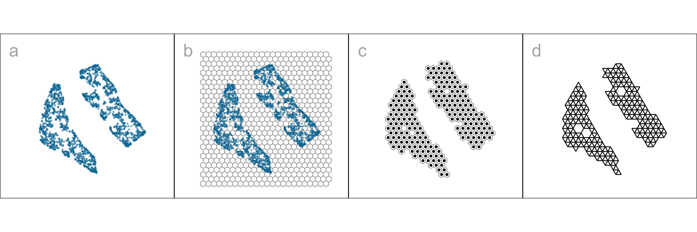
Algorithm to represent the model in 2\text{-}D
Scale the data
Because we are working with distances between points, starting with data having a standard scale, e.g. [0, 1], is recommended. The default should take the aspect ratio produced by the NLDR (r_1, r_2, ..., r_k) into account. When k=2, as in hexagon binning, the default range is [0, y_{i,\text{max}}], i=1,2, where y_{1,\text{max}}=1 and y_{2,\text{max}} = r_2/r_1 (Figure 2.2). If the NLDR aspect ratio is ignored then set y_ {2,\text{max}} = 1.
Hexagon grid configuration
Although there are several implementations of hexagon binning (Carr et al. 1987), and a published paper (Carr et al. 2023), surprisingly, none has sufficient detail or components that produce everything needed for this project. So we described the process used here. Figure 2.3 illustrates the notation used.
The 2\text{-}D hexagon grid is defined by its bin centroids. Each hexagon, H_h (h = 1, \dots, b) is uniquely described by centroid, C_{h}^{(2)} = (c_{h1}, c_{h2}). The number of bins in each direction is denoted as (b_1, b_2), with b = b_1 \times b_2 being the total number of bins. We expect the user to provide just b_1 and we calculate b_2 using the NLDR ratio, to compute the grid.
To ensure that the grid covers the range of data values a buffer parameter (q) is set as a proportion of the range. By default, q=0.1. The buffer should be extending a full hexagon width (a_1) and height (a_2) beyond the data, in all directions. The lower left position where the grid starts is defined as (s_1, s_2), and corresponds to the centroid of the lowest left hexagon, C_{1}^{(2)} = (c_{11}, c_{12}). This must be smaller than the minimum data value. Because it is one buffer unit, q below the minimum data values, s_1 = -q and s_2 = -qr_2.
The value for b_2 is computed by fixing b_1. Considering the upper bound of the first NLDR component, a_1 > (1+2q)/(b_1 -1). Similarly, for the second NLDR component,
a_2 \geq \frac{r_2 + q(1 + r_2)}{(b_2 - 1)}.
Since a_2 = \sqrt{3}a_1/2 for regular hexagons,
a_1 \geq \frac{2[r_2 + q(1 + r_2)]}{\sqrt{3}(b_2 - 1)}.
This is a linear optimization problem. Therefore, the optimal solution must occur on a vertex. Therefore,
b_2 = \Big\lceil1 +\frac{2[r_2 + q(1 + r_2)](b_1 - 1)}{\sqrt{3}(1 + 2q)}\Big\rceil. \tag{2.1}
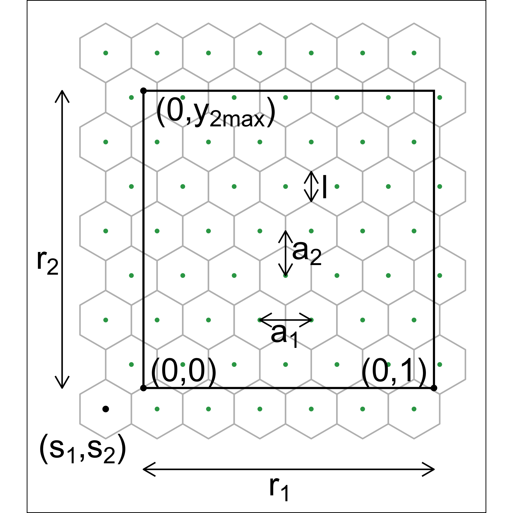
Binning the data
Observations are grouped into bins based on their nearest centroid. This produces a reduction in size of the data from n to m, where m\leq b (total number of bins). This can be defined using the function u: \mathbb{R}^{n\times 2} \rightarrow \mathbb{R}^{m\times 2}, where u(i) = \arg\min_{j = 1, \dots, b} \sqrt{(y_{i1} - C^{(2)}_{j1})^2 + (y_{i2} - C^{(2)}_{j2})^2}, maps observation i into H_h = \{i| u(i) = h\}.
By default, the bin centroid is used for describing a hexagon (as done in Figure 2.2 (c)), but any measure of center, such as a mean or weighted mean of the points within each hexagon, could be used. The bin centers, and the binned data, are the two important components needed to render the model representation in high dimensions.
Indicating neighborhood
Delaunay triangulation (Gebhardt et al. 2024; Lee and Schachter 1980) is used to connect points so that edges indicate neighboring observations, in both the NLDR layout (Figure 2.2 (d)) and the p\text{-}D model representation. When the data has been binned the triangulation connects centroids. The edges preserve the neighborhood information from the 2\text{-}D representation when the model is lifted into p\text{-}D.
Rendering the model in p\text{-}D
The last step is to lift the 2\text{-}D model into p\text{-}D by computing p\text{-}D vectors that represent bin centroids. We use the p\text{-}D mean of the points in a given hexagon, H_h, denoted C_{h}^{(p)}, to map the centroid C_{h}^{(2)} = (c_{h1}, c_{h2}) to a point in p\text{-}D. Let the j^{th} component of the p\text{-}D mean be
C_{hj}^{(p)} = \frac{1}{n_h}\sum_{i =1}^{n_h} x_{hij}, ~~~h = 1, \dots, b;~ j=1, \dots, p; ~ n_h > 0.
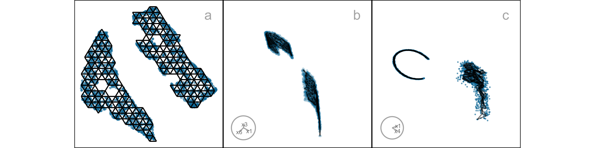
Measuring the fit
All NLDR methods internally optimize a quantity to produce a layout for any particular hyper-parameter set. These are not always made available in the model output, and may not be universally comparable between hyper-parameter choices and methods.
Several common metrics are often used to assess the quality of any NLDR layout, based on preservation of global and local structure of the data. The RNX curve quantifies the neighborhood agreement between p\text{-}D and k\text{-}D spaces, by computing the area under the curve (ARNX) across a range of neighborhood scales (Lee et al. 2015). A high value indicates better preservation of a balance of global and local structure. Random Triplet Accuracy (RTA) and Centroid Triplet Accuracy compare the order of 2\text{-}D and p\text{-}D distances of random triplets of points (Wang et al. 2021). High values indicate preservation of the geometry, suggesting both local and global structure preservation. The Shepard diagram (Shepard 1962) and its associated Spearman correlation (SC) (Spearman 1961) between p\text{-}D and k\text{-}D distances. High values indicate preservation of global structure. The Global Score (GS) measures how well an embedding retains the overall geometry of the data relative to a PCA baseline (Amid and Warmuth 2019). Higher values indicate better preservation of global structure. The metric RTA, SC, GS, and ARNX have been reversed (rRTA, rSC, rGS, and rARNX) so that they align with HBE - the lower the value the better the layout.
None of the above measures is particularly well-suited to assessing our model fit, as we will show later. Thus, we need a different approach to measuring model fit. Because the model here is similar to a confirmatory factor analysis model (see a general explanation in Brown (2015)), \widehat{T} + \epsilon, our approach is similar to the ones used in this area. it is based on “residuals” computed as the difference between the fitted model and observed values in p\text{-}D. Observations are associated with their bin center, C_{h}^{(p)}, which are also considered to be the fitted values. In factor analysis language, these fitted values might also be denoted as \widehat{X}. The error is computed by taking the squared p\text{-}D Euclidean distance, of points from their bin centroid, which we will call hexbin error (HBE):
HBE = \sqrt{\frac{1}{n}\sum_{h = 1}^{m}\sum_{i = 1}^{n_h}\sum_{j = 1}^{p} (\bm{x}_{hij} - C^{(p)}_{hj})^2} \tag{2.2}
where n is the number of observations, m is the number of non-empty bins, n_h is the number of observations in h^{th} bin, p is the number of variables and \bm{x}_{hij} is the j^{th} dimensional data of i^{th} observation in h^{th} hexagon. We can consider e_{hi} = \sqrt{\sum_{j = 1}^{p} (\bm{x}_{hij} - C^{(p)}_{hj})^2} to be the residual for each observation. Figure 2.5 shows plots of e as a density (a), coloring the points in the NLDR layout (b) and the points in a tour (c). It can be see that the biggest residuals are in one cluster, which occurs due the intentional design that one cluster is slightly 3\text{-}D and perfectly captured by a 2\text{-}D layout.
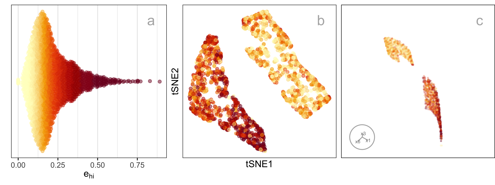
Prediction into 2\text{-}D
NLDR methods are primarily designed for visualization and exploration rather than reconstruction, and do not explicitly provide out-of-sample prediction. Of the five methods studied here, only UMAP provides a predict() function for embedding new data points based on the learned manifold (Konopka 2023). Several other approaches, not used here, PCA, neural network autoencoders (Hinton and Salakhutdinov 2006) and parametric tSNE (Maaten 2009) support prediction.
A benefit of our approach is that for any NLDR method, it provides a way to predict the layout position of a new observation, x'. The steps are (1) determine the closest bin centroid in p\text{-}D, C^{(p)}_{h} and (2) predict the embedding to be the bin centroid in 2\text{-}D, C^{(2)}_{h}.
Tuning
The model fitting is based on several parameters, including the hexagon bin parameters and the low count bin removal process. The hexagon bin parameters define the bottom-left bin position (s_1, \ s_2), the number of bins in the horizontal direction (b_1), which also determines the number of bins in the vertical direction (b_2), the total number of bins (b), and the total number of non-empty bins (m). Low count bins are removed using standardized bin counts, defined as w_h = n_h/n, ~~h=1, \dots m.
Default values are provided for each of these, but deciding on the best model fit is assisted by examining a range of values. The default number of bins b=b_1\times b_2 is computed based on the sample size, by setting b_1=n^{1/3}, consistent with the Diaconis-Freedman rule (Freedman and Diaconis 1981). The value of b_2 is determined analytically by b_1, q, r_2 (Equation 2.1). Values of b_1 between 2 and b_1 = \sqrt{n/r_2} are recommended, where the dependence on r_2 reflects the preservation of aspect ratio in the NLDR layout.
Figure 2.6 shows the hexbin grids for three choices of b_1. While the number of bins is the common parameter to modify, bin start positions (s_1, \ s_2) can be worth experimenting with also because it can also change bin counts.
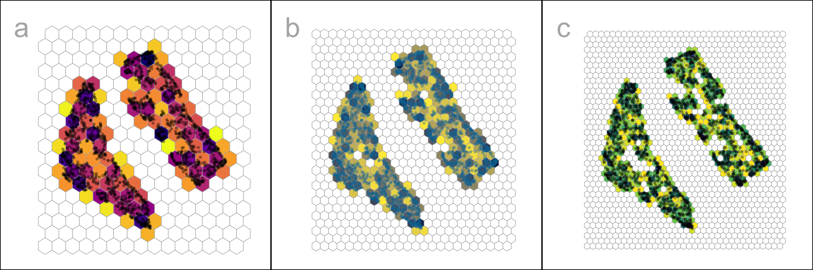
It is worthwhile to consider what are desirable aspects of a hexbin result, that maps to summarizing the p\text{-}D fit well. The binning should capture the underlying data distribution closely, with minimum number of necessary bins. An ideal binning might be indicated by a more uniform distribution of bin counts, or having few relatively empty bins. To help with this assessment average bin count (\bar{n} = \sum{n_h}/m), average standardized bin count (\bar{w} = \sum{w_h}/m) and proportion of non-empty bins (m/b), are also computed. Figure 2.7 shows some choices of plots of these quantities for a single NLDR layout, with three choices of a_1 indicated. Some expectations and reasoning for these plots is:
- HBE will increase as a_1 increases, so good choices will be just before a big increase. In plot a, HBE changes fairly steadily so there is no easy choice to make.
- HBE can also be examined against average standardized bin count or average bin count (plot b). This is similar to the comparison with a_1 but to use when comparing different NLDR layouts. Different layouts might produce different density of points, which will not be captured well by a comparison of HBE vs a_1.
- The proportion of non-empty bins is interesting to examine across different binwidths (plot c). A good binning should have just the right amount of bins to neatly cover the shape of the data, and no more or less. As binwidth gets smaller, m/b should roughly get bigger.
- Bins with a small number of observations might be removed to sharpen the wireframe model. This can have adverse effects, though - failing to extend the wireframe into sparse areas, or resulting in holes in the wireframe. Plot d shows the relationship between HBE (computed for all observations despite some bin removal) and the standardized bin count cutoff used to remove bins. For all three chosen bin widths a small number of bins can be removed without affecting HBE.
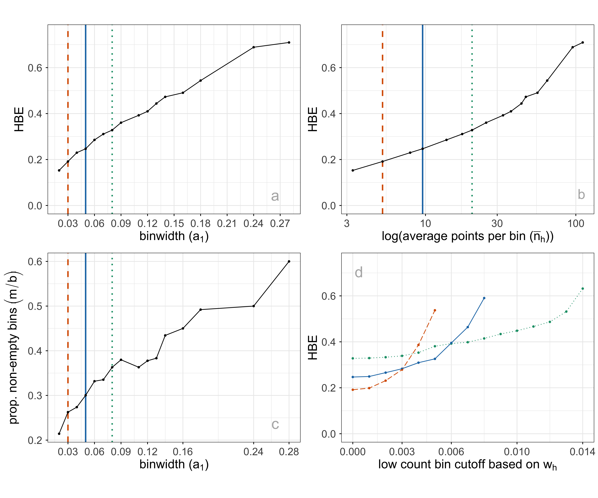
Interactive graphics
Matching points in the 2\text{-}D layout with their positions in p\text{-}D is useful when tuning the fit. This can be used to examine the fitted model in some subspaces in p\text{-}D, in particular in association with residual plots.
The interactive 2\text{-}D layout (Sievert 2020) and the langevitour (Harrison 2023) view with the fitted model overlaid can be linked using a browsable HTML widget (Cheng and Sievert (2025), Cheng et al. (2024)). A rectangular “brush” is used to select points in one plot, which will highlight the corresponding points in the other plot(s). Because the langevitour is dynamic, brush events that become active will pause the animation, so that a user can interrogate the current view. This approach will be illustrated on the examples, to show how it can help to understand how the NLDR has organized the observations, and learn where it does not do well.
2.4 Choosing the best 2\text{-}D layout
Figure 2.8 illustrates the approach to compare the fits for different representations and assess the strength of any fit. What does it mean to be a best fit for this problem? Analysts use an NLDR layout to display the structure present in high-dimensional data in a convenient 2\text{-}D display. It is a competitor to linear dimension reduction that can better represent nonlinear associations such as clusters. However, these methods can hallucinate, suggesting patterns that don’t exist, and grossly exaggerate other patterns. Having a layout that best fits the high-dimensional structure is desirable but more important is to identify bad representations so they can be avoided. The goal is to help users decide on a the most useful and appropriate low-dimensional representation of the high-dimensional data.
A particular pattern that we commonly see is that analysts tend to pick layouts with clusters that have big separations between them. When you examine their data in a tour, it is almost always that we see there are no big separations, and actually often the suggested clusters are not even present. While we don’t expect that analysts include animated gifs of tours in their papers, we should expect that any 2\text{-}D representation adequately indicates the clustering that is present, and honestly show lack of separation or lack of clustering when it doesn’t exist. It is important for analysts to have tools to select the accurate representation not the pretty but wrong representation.
To decide on a reasonable layout, an analyst needs a selection of NLDR representations generated using a range of hyper-parameter choices and possibly different methods, such as tSNE and UMAP. They also require a range of model fits created by varying the binwidths and the level of low count bin removal, along with the calculated HBE values for each layout after transformation into the p\text{-}D space. Finally, the analyst must be able to visually examine how well each model fits the data in the original data space.
Comparing the HBE to obtain the best fit is appropriate if the same NLDR method is used. However, because the HBE is computed on p\text{-}D data it measures the fit between model and data so it can also be used to compare the fit of different NLDR methods. A lower HBE indicates a better NLDR representation.
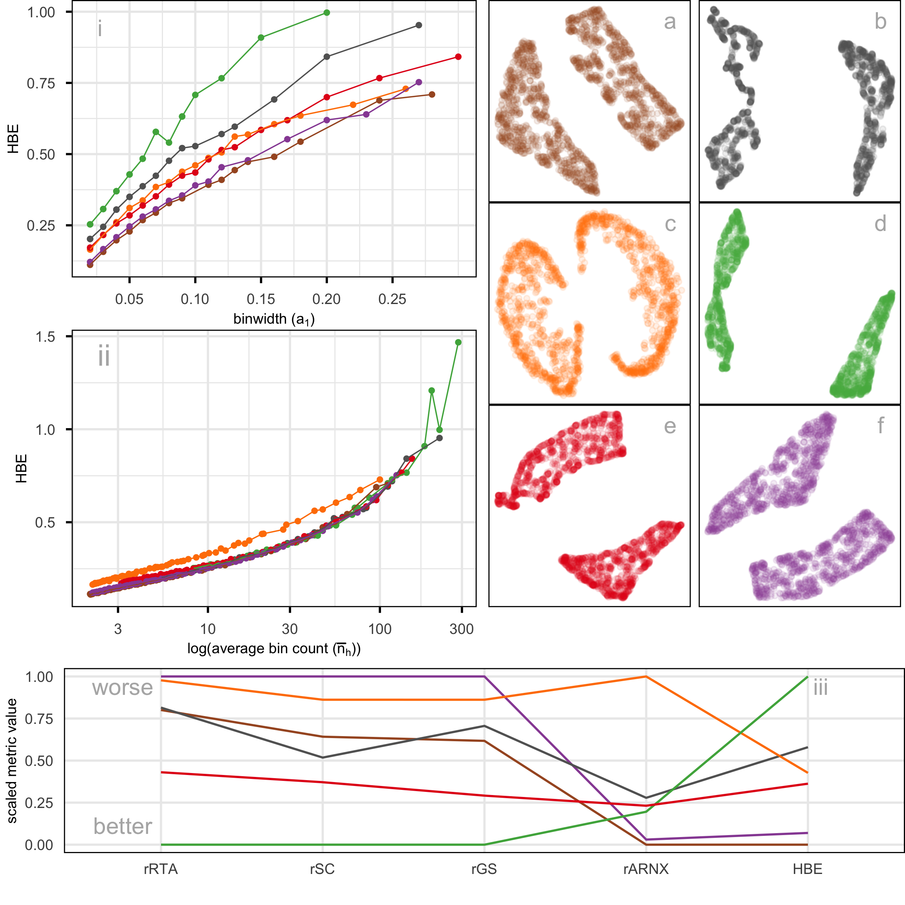
Figure 2.8 compares the metrics rARNX, rRTA, rSC, rGS, along with HBE computed on a_1=0.05 for the six layouts shown in Figure 2.8. This is a parallel coordinate plot where the y-axis shows a normalized score to ensure the metrics are on the same scale. Each line corresponds to one layout.
There is some agreement between the metrics. All, except rARNX and HBE agree that layout d is best. rARNX and HBE agree that layout f is best or very close to best. Layout a is best according to HBE and rARNX but considered to be much less optimal by rRTA, rSC and rGS. Layout c is considered poor by rRTA, rSC, rGS, and rARNX. This illustrates how difficult it is to use the numerical metrics alone to decide on the best layout.
The problem with rSC is that correlation is not a good measure in the presence of clusters - the further the clusters are apart in the layout produces a Shepard plot with two clusters of distances which will produce a high correlation value. Similar reasoning would explain why rRTA and rGS behave similarly: they put too much emphasis on the global structure. Thus, for the 2NC7 data further apart clusters score better, overly emphasizing that there are two clusters, even though this separation is not accurately reflecting the difference in p\text{-}D.
When the metrics disagree is causes confusion for the analyst, and thus provides a temptation to choose the nicest looking layout (very separated clusters), even though it may be a hallucination. Because HBE is accompanied with a representation of the layout in p\text{-}D to compare with the observed data, it can help to add more clarity in making decisions. Figure 2.9 shows the fitted models for layouts a (rated high by HBE and rARNX) and c (rated poorly). These are 2\text{-}D projections from the tour, with black indicating the fitted model overlaid on the blue points of the data. The reason for the poor fit is that the PHATE layout (c) twists extremely along the 2- and 3\text{-}D manifolds where the data lies. We have learned that all the NLDR methods tend to have twists in the fit in p\text{-}D but this is extreme. This is likely why layout c has poor metrics relative to the other layouts, and it suggests that it does not adequately capture the local structure in the 2NC7 data.
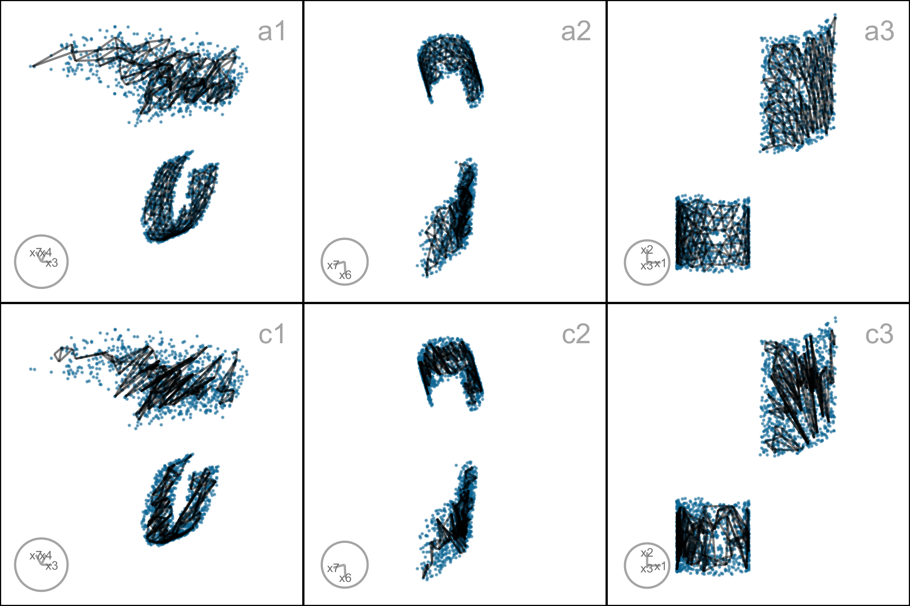
2.5 Applications
To illustrate the approach we use two examples: PBMC3k data (single cell gene expression) where an NLDR layout is used to represent cluster structure present in the p\text{-}D data, and MNIST hand-written digits where NLDR is used to represent essentially a low-dimensional nonlinear manifold in p\text{-}D.
PBMC3k
This is a benchmark single-cell RNA-Seq data set collected on Human Peripheral Blood Mononuclear Cells (PBMC3k) as used in 10x Genomics (2016). Single-cell data measures the gene expression of individual cells in a sample of tissue (see for example, Haque et al. (2017)). This type of data is used to obtain an understanding of cellular level behavior and heterogeneity in their activity. Clustering of single-cell data is used to identify groups of cells with similar expression profiles. NLDR is often used to summarize the cluster structure. Usually, NLDR does not use the cluster labels to compute the layout, but uses color to represent the cluster labels when it is plotted.
In this data there are 2622 single cells and 1000 gene expressions (variables). Following the same pre-processing as Chen et al. (2024), different NLDR techniques were performed on the first nine principal components. Figure 2.1 shows this data using a variety of methods, and different hyper-parameters. You can see that the result is wildly different depending on the choices. Layout a is a reproduction of the layout that was published in Chen et al. (2024). This layout suggests that the data has three very well separated clusters, each with an odd shape. The question is whether this accurately represents the cluster structure in the data, or whether they should have chosen b or c or d or e or f or g or h. This is what our new method can help with – to decide which is the more accurate 2\text{-}D representation of the cluster structure in the p\text{-}D data.
Figure 2.10 shows HBE across a range of binwidths (a_1) for each of the layouts in Figure 2.1. The layouts were generated using tSNE and UMAP with various hyper-parameter settings, while PHATE, PaCMAP, and TriMAP were applied using their default settings. Lines are color coded to match the color of the layouts shown on the right. Lower HBE indicates the better fit. Using a range of binwidths shows how the model changes, with possibly the best model being one that is universally low HBE across all binwidths. It can be seen that layout f is sub-optimal with universally higher HBE. Layout a, the published one, is better but it is not as good as layouts b, d, or e. With some imagination layout d perhaps shows three barely distinguishable clusters. Layout e shows three, possibly four, clusters that are more separated. The choice reduces from eight to these two. Layout d has slightly better HBE when the a_1 is small, but layout e beats it at larger values. Thus we could argue that layout e is the most accurate representation of the cluster structure, of these eight.
To further assess the choices, we need to look at the model in the data space, by using a tour to show the wireframe model overlaid on the data in the 9\text{-}D space (Figure A.7). Here we compare the published layout (a) versus what we argue is the best layout (e). The top row (a1, a2, a3) correspond to the published layout and the bottom row (e1, e2, e3) correspond to the optimal choice according to our procedure. The middle and right plots show two projections. The primary difference between the two models is that the model of layout e does not fill out to the extent of the data but concentrates in the center of each point cloud. Both suggest that three clusters is a reasonable interpretation of the structure, but layout e more accurately reflects the separation between them, which is small.
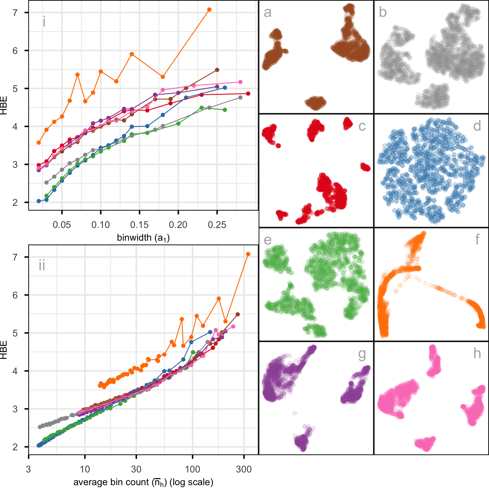
MNIST hand-written digits
The digit “1” of the MNIST dataset (LeCun et al. 1998) consists of 7877 grayscale images of handwritten “1”s. Each image is 28 \times 28 pixels which corresponds to 784 variables. The first 10 principal components, explaining 83\% of the total variation, are used. This data essentially lies on a nonlinear manifold in the high dimensions, defined by the shapes that “1”s make when sketched. We expect that the best layout captures this type of structure and does not exhibit distinct clusters.
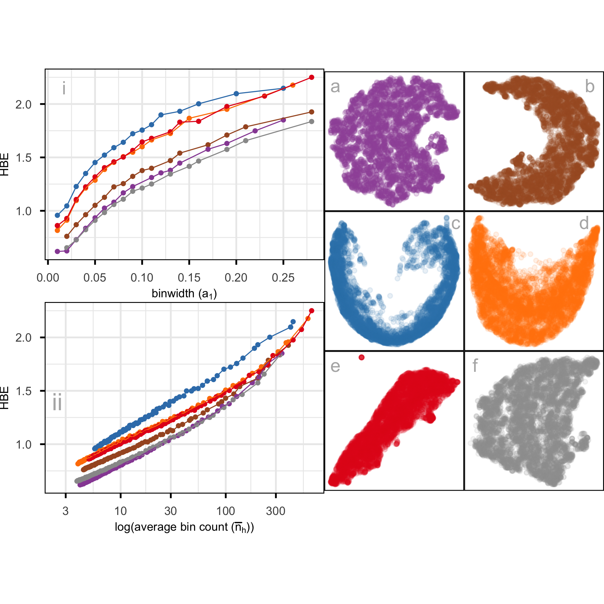
Figure 2.12 compares the fit of six layouts computed using UMAP (b), PHATE (c), TriMAP (d), PaCMAP (e) with default hyper-parameter setting and two tSNE runs, one with default hyper-parameter setting (a) and the other changing perplexity to 89 (f). The layouts are reasonably similar in that they all have the observations in a single blob. Some (b, c) have a more curved shape than others. Layout e is the most different having a linear shape, and a single very large outlier. Both a and f have a small clump of points perhaps slightly disconnected from the other points, in the lower to middle right.
The layout plots are colored to match the lines in the HBE vs binwidth (a_1) plot. Layouts a, b and f fit the data better than c, d, e, and layout f appears to be the best fit. Figure 2.13 shows this model in the data space in two projections from a tour. The data is curved in the 10\text{-}D space, and the fitted model captures this curve. The small clump of points in the 2\text{-}D layout is highlighted in both displays. These are almost all inside the curve of the bulk of points and are sparsely located. The fact that they are packed together in the 2\text{-}D layout is likely due to the handling of density differences by the NLDR.
An interesting aside is that the rather strange layout e, which has what looks like a single point far from the remaining observations is actually similar to this one. That point is actually a clump of points corresponding to some of the diffuse points interior to the curve of the bulk of points. This is easy to see using the linked brushing tool.
The next step is to investigate the 2\text{-}D layout to understand what information is learned from this representation. Figure 2.14 summarizes this investigation. Plot a shows the layout with points colored by their residual value - darker color indicates larger residual and poor fit. The plots b, c, d, e show samples of hand-written digits taken from inside the colored boxes. Going from top to bottom around the curve shape we can see that the “1”s are drawn with from right slant to a left slant. The “1”s in d (black box) tend to have the extra up stroke but are quite varied in appearance. The “1”s shown in the plots labelled e correspond to points with big residuals. They can be seen to be more strangely drawn than the others. Overall, this 2\text{-}D layout shows a useful way to summarize the variation in way “1”s are drawn.
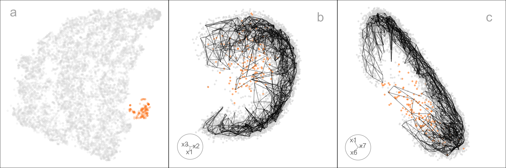
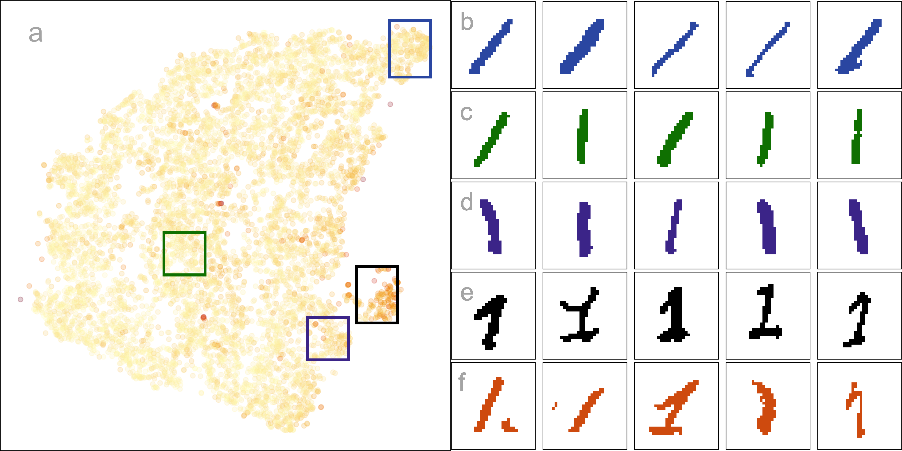
2.6 Discussion
We have developed an approach to help assess and compare NLDR layouts, generated by different methods and hyper-parameter choice(s). It depends on conceptualizing the 2\text{-}D layout as a model, allowing for the creation of a wireframe representation of the model that can be lifted into p\text{-}D. The fit is assessed by viewing the model in the data space, computing residuals and HBE. Different layouts can be compared using the HBE, providing a quantitative metric to decide on the most suitable NLDR layout to represent the p\text{-}D data. Global and local preservation of structure is assessed by examining the HBE across a range of binwidths. It also provides a way to predict the values of new p\text{-}D observations in the 2\text{-}D, which could be useful for implementing uncertainty checks, such as using training and testing samples.
The new methodology is accompanied by an R package called quollr, so that it is readily usable and broadly accessible. The package has methods to fit the model, compute diagnostics and also visualize the results, with interactivity. We have primarily used the langevitour software (Harrison 2023) to view the model in the data space, but other tour software such as tourr (Wickham et al. 2011) and detourr (Hart and Wang 2025) could also be used.
Two examples illustrating usage are provided: the PBMC3k data, where the NLDR is summarizing clustering in p\text{-}D and hand-written digits illustrating how NLDR represents an intrinsically low-dimensional nonlinear manifold. We examined a typical published usage of UMAP with the PBMC3k dataset (Chen et al. 2024). As is typical of UMAP layout with default settings, the separation between clusters is grossly exaggerated. The layout even suggests separation where there is none. Our approach provides a way to choose a reasonable layout and avoids the use of misleading layouts in the future. In the hand-written digits (LeCun et al. 1998), we illustrate how our model fit statistics show that a flat disc layout is superior to the curved-shaped layouts, and how to identify oddly written “1”s using the residuals of the fitted model.
This work can be applied with existing metrics for evaluating NLDR layout, such as ARNX, RTA, SC, and RGS. It provides an additional evaluation metric, and importantly allows any layout to be viewed in the p\text{-}D data space. This latter aspect can help to disentangle conflicting suggestions by the different metrics.
Additional exploration of distance measures to summarize the fit could be a valuable direction for future work. We have used Euclidean distance, but other measures, such as geodesic distances (Tenenbaum et al. 2000), may better capture curved or nonlinear relationships in the data and are worth exploring.
This work has also revealed some interesting behaviors of NLDR methods, including twisting, flattened “pancake” clusters in p\text{-}D, and severe effects of density differences. These are described in more detail in the supplementary materials.
Researchers usually use 2\text{-}D layouts, but if a k\text{-}D (k>2) layout is provided the approach developed here could be extended. Potential approaches include 3\text{-}D binning, k-means clustering, or even special implementations of convex hulls.
2.7 Supplementary Materials
All the materials to reproduce the chapter can be found at https://github.com/JayaniLakshika/paper-nldr-vis-algorithm.
The supplementary materials provide additional details on the methods and hyper-parameters used to generate layouts, video links of animated p\text{-}D tours, notation summaries, and the R and Python scripts used in the study. They also describe the generation of the 2NC7 data, computation of hexagon grid configurations, and data binning procedures. Further sections highlight interesting NLDR behaviors observed in the data space and compare HBE with existing evaluation metrics for the PBMC3k and MNIST datasets.
The R package quollr, available on CRAN and at https://jayanilakshika.github.io/quollr/, provides software accompaying this chapter to fit the wireframe model representation, compute diagnostics, visualize the model in the data with langevitour and link multiple plots interactively.
2.8 Acknowledgments
These R packages were used for the work: tidyverse (Wickham et al. 2019), Rtsne (Krijthe 2015), umap (Konopka 2023), patchwork (Pedersen 2024), colorspace (Zeileis et al. 2020), langevitour (Harrison 2023), conflicted (Wickham 2023), reticulate (Ushey et al. 2024), kableExtra (Zhu 2024). These python packages were used for the work: trimap (Amid and Warmuth 2019) and pacmap (Wang et al. 2021). The article was created with R packages quarto (Allaire and Dervieux 2024).